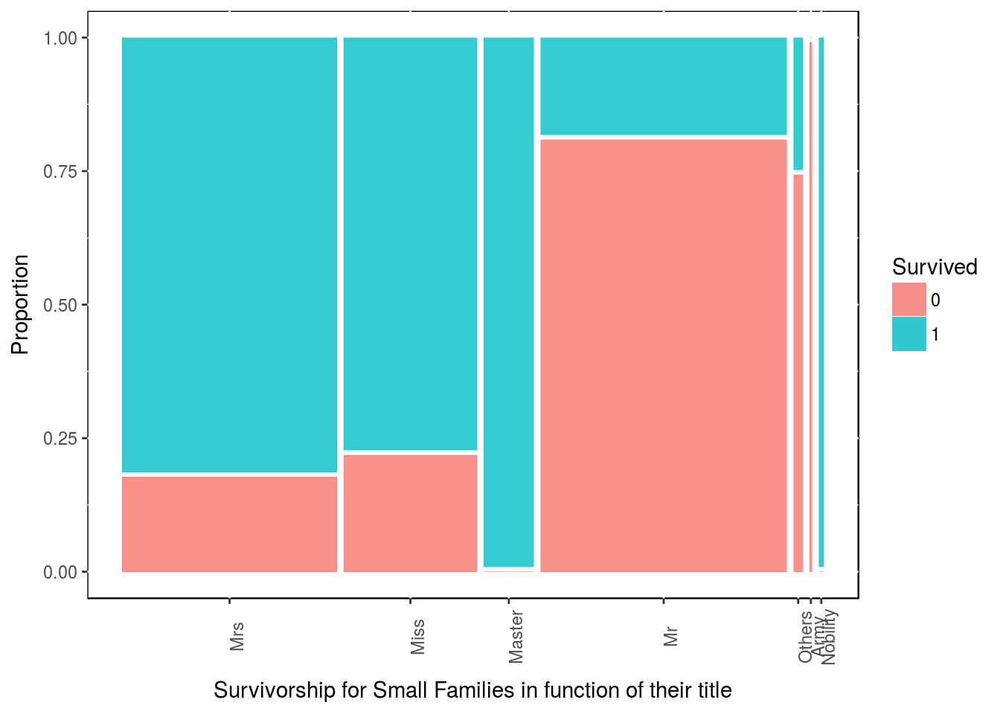
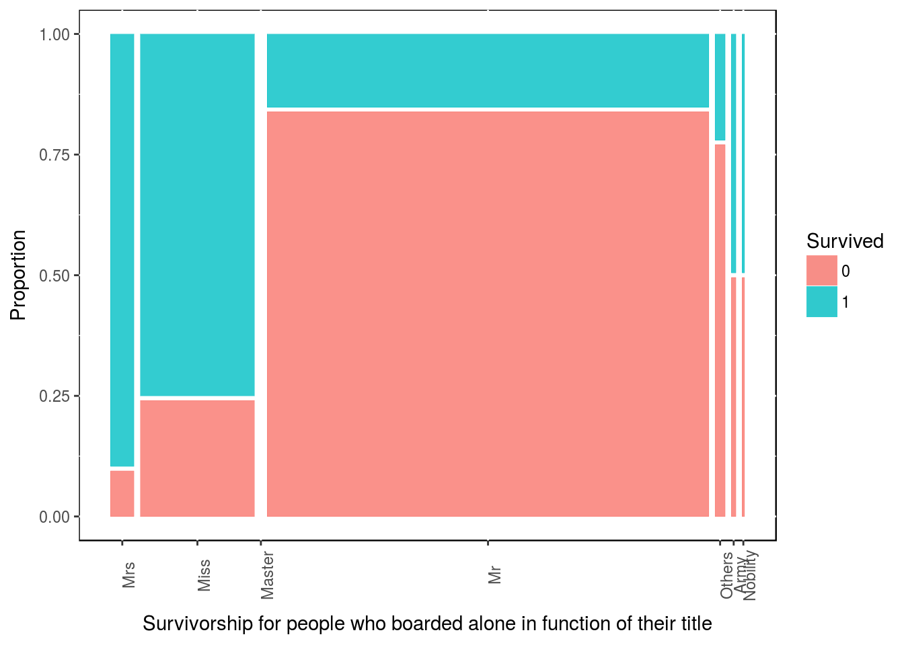
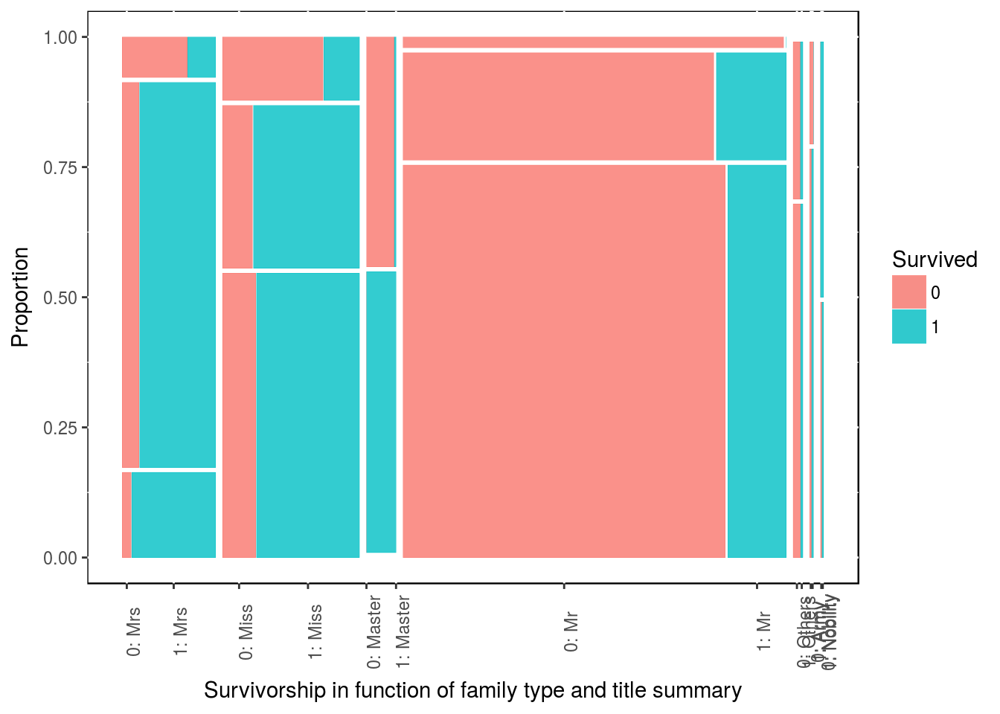
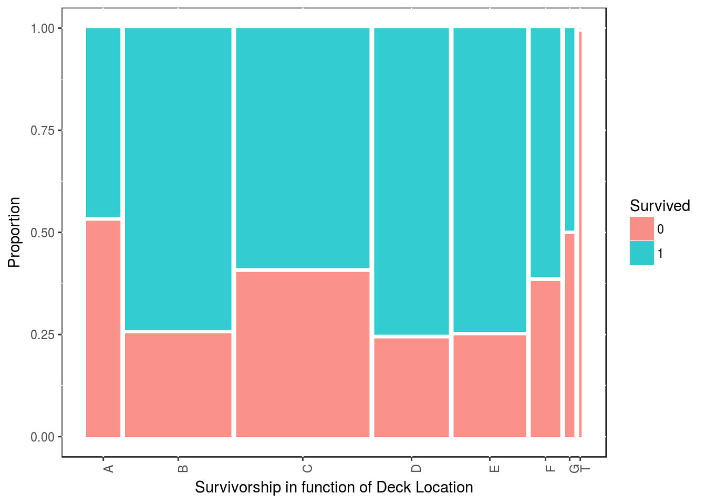

Chapter 7 Case Study - Predicting Survicalship on the Titanic
This chapter demonstrates another example of classification with machine learning. Kaggle made this exercise quite popular.
In this study, the training and test sets have already been defined, so we
7.1 Import the data.
We have put our data into our google drive here and here. You can find them on Kaggle if need be.
library(readr)
library(dplyr)
train_set <- read_csv("~/Google Drive/Software/R projects/datasets/Kaggle_Titanic_train.csv")
test_set <- read_csv("~/Google Drive/Software/R projects/datasets/Kaggle_Titanic_test.csv")
## Let's bind both set of data for our exploratory analysis.
mydata <- bind_rows(train_set, test_set)
## Let's have a first glimpse to our data
glimpse(mydata)## Observations: 1,309
## Variables: 12
## $ PassengerId <int> 1, 2, 3, 4, 5, 6, 7, 8, 9, 10, 11, 12, 13, 14, 15,...
## $ Survived <int> 0, 1, 1, 1, 0, 0, 0, 0, 1, 1, 1, 1, 0, 0, 0, 1, 0,...
## $ Pclass <int> 3, 1, 3, 1, 3, 3, 1, 3, 3, 2, 3, 1, 3, 3, 3, 2, 3,...
## $ Name <chr> "Braund, Mr. Owen Harris", "Cumings, Mrs. John Bra...
## $ Sex <chr> "male", "female", "female", "female", "male", "mal...
## $ Age <dbl> 22, 38, 26, 35, 35, NA, 54, 2, 27, 14, 4, 58, 20, ...
## $ SibSp <int> 1, 1, 0, 1, 0, 0, 0, 3, 0, 1, 1, 0, 0, 1, 0, 0, 4,...
## $ Parch <int> 0, 0, 0, 0, 0, 0, 0, 1, 2, 0, 1, 0, 0, 5, 0, 0, 1,...
## $ Ticket <chr> "A/5 21171", "PC 17599", "STON/O2. 3101282", "1138...
## $ Fare <dbl> 7.2500, 71.2833, 7.9250, 53.1000, 8.0500, 8.4583, ...
## $ Cabin <chr> NA, "C85", NA, "C123", NA, NA, "E46", NA, NA, NA, ...
## $ Embarked <chr> "S", "C", "S", "S", "S", "Q", "S", "S", "S", "C", ...7.2 Tidy the data
One can already see that we should put Survived, Sex and Embarked as factor.
mydata$Survived <- factor(mydata$Survived)
mydata$Sex <- factor(mydata$Sex)
mydata$Embarked <- factor(mydata$Embarked)7.3 Understand the data
This step consists in massaging our variables to see if we can construct new ones or create additional meaning from what we have. This step require some additional knowledge related to the data and getting familiar with the topics at hand.
7.3.1 A. Transform the data
The great thing about this data set is all the features engineering one can do to increase the predictibilty power of our model.
7.3.1.1 Dealing with names.
One of the thing one can notice is the title associated with the name. The full names on their own might have little predictibility power, but the title in the name might have some value and can be used as an additional variables.
glimpse(mydata$Name) ## chr [1:1309] "Braund, Mr. Owen Harris" ...## gsub is never fun to use. But we need to strip the cell up to the comma,
## then everything after the point of the title.
mydata$title <- gsub('(.*,)|(\\..*)', "", mydata$Name)
table(mydata$Sex,mydata$title)##
## Capt Col Don Dona Dr Jonkheer Lady Major Master Miss
## female 0 0 0 1 1 0 1 0 0 260
## male 1 4 1 0 7 1 0 2 61 0
##
## Mlle Mme Mr Mrs Ms Rev Sir the Countess
## female 2 1 0 197 2 0 0 1
## male 0 0 757 0 0 8 1 0Some titles are just translations from other languages. Let’s regroup those. Some other titles aren’t occuring often and would not justify to have a category on their own. We have regroup some titles under common category. There is some arbitraire in here.
mydata$title <- gsub("Mlle", "Miss", mydata$title)
mydata$title <- gsub("Mme", "Mrs", mydata$title)
mydata$title <- gsub("Ms", "Miss", mydata$title)
mydata$title <- gsub("Jonkheer", "Mr", mydata$title)
mydata$title <- gsub("Capt|Col|Major", "Army", mydata$title)
mydata$title <- gsub("Don|Dona|Lady|Sir|the Countess", "Nobility", mydata$title)
mydata$title <- gsub("Dr|Rev", "Others", mydata$title)
mydata$title <- factor(mydata$title)
mydata$title <- factor(mydata$title,
levels(mydata$title)[c(5, 3, 2, 4, 7, 1, 6)] )
table(mydata$Sex, mydata$title)##
## Mrs Miss Master Mr Others Army Nobility
## female 198 264 0 0 1 0 3
## male 0 0 61 758 15 7 2It would be also interesting in fact to check the proportion of survivors for each type of title.
round(prop.table(table(mydata$Survived, mydata$title), 2), 2)##
## Mrs Miss Master Mr Others Army Nobility
## 0 0.21 0.30 0.42 0.84 0.77 0.60 0.25
## 1 0.79 0.70 0.57 0.16 0.23 0.40 0.75We can notice that Mrs are more likely to survive than Miss. As expected, our Mr have a very low likelyhood of success. Our Noble title managed mostly to survive.
Our next step is to create a Last_Name variable. This could be helpful as the ways family have escaped the boat might hold some pattens.
## To get the last name we strip everything after the first comma.
mydata$last_name <- gsub(",.*", "", mydata$Name)
## We can now put this as factor and check how many families.
mydata$last_name <- factor(mydata$last_name)So we have 875 different families on board of the Titanic. Of course, there might have different families with the same last name. If that’s the case, we won’t know.
7.3.2 A. Vizualize with families.
We could add a variable about the family size.
mydata$family_size <- mydata$SibSp + mydata$Parch + 1If we plot that to check survivalship in function of family size, one can notice interesting patterns.
x <- mydata[1:891,]
ggplot(x, aes(x = family_size, fill = factor(Survived))) +
geom_bar(stat = 'count', position = "dodge") +
scale_x_continuous(breaks = c(1:11)) +
labs(x = "Family Size", fill = "Survived",
title = "Survivalship by Family Size") +
theme(legend.position = c(0.9, 0.8), panel.background = NULL)Obviously, we only have the survivalship for the train set of data, as we have to guess the test set of data. So from what we have, there is a clear advantage in being a family of 2, 3 or 4. We could collapse the variable Family_Size into 3 levels.
mydata$family_size_type[mydata$family_size == 1] <- "Singleton"
mydata$family_size_type[mydata$family_size <= 4 & mydata$family_size > 1] <- "Small"
mydata$family_size_type[mydata$family_size > 4] <- "Large"
mydata$family_size_type <- factor(mydata$family_size_type, levels = c("Singleton", "Small", "Large"))We can see how many people in each category, then we plot the proportion of survivers in each category.
x <- mydata[1:891,]
table(x$Survived, x$family_size_type)##
## Singleton Small Large
## 0 374 123 52
## 1 163 169 10library(ggmosaic)
ggplot(data = x) + geom_mosaic(aes(x = product(family_size_type), fill = Survived)) +
labs(x = "Family Size", y = "Proportion") +
theme(panel.background = NULL)Clearly, there is an advantage in being in a family of size 2, 3 or 4; while there is a disadventage in being part of of a bigger family.
We can try to digg in a bit further with our new family size and titles. For people who are part of a Small family size, which title are more likely to surived?
y <- x %>% dplyr::filter(family_size_type == "Small")
table(y$Survived, y$title)##
## Mrs Miss Master Mr Others Army Nobility
## 0 17 13 0 89 3 1 0
## 1 78 46 22 20 1 0 2ggplot(data = y) + geom_mosaic(aes(x = product(title), fill = Survived)) +
labs(x = "Survivorship for Small Families in function of their title",
y = "Proportion") +
theme(panel.background = NULL, axis.text.x = element_text(angle=90, vjust=1))
All masters in small families have survived. Miss & Mrs in small family size have also lots of chane of survival.
Similarly, for people who embarked alone (Singleton), which title are more likely to surived?
y <- x %>% filter(family_size_type == "Singleton")
table(y$Survived, y$title)##
## Mrs Miss Master Mr Others Army Nobility
## 0 2 25 0 337 7 2 1
## 1 19 78 0 61 2 2 1ggplot(data = y) + geom_mosaic(aes(x = product(title), fill = Survived)) +
labs(x = "Survivorship for people who boarded alone in function of their title",
y = "Proportion") +
theme(panel.background = NULL, axis.text.x = element_text(angle=90, vjust=1))
It might not comes as clear, but we could do the same for title and gender. Vertically the stacks are ordered as Singleton then Small then Large.
ggplot(data = x) + geom_mosaic(aes(x = product(family_size_type, title), fill = Survived)) +
labs(x = "Survivorship in function of family type and title summary",
y = "Proportion") +
theme(panel.background = NULL, axis.text.x = element_text(angle=90, vjust=1))
7.4 A. Visualize with cabins.
Although there are many missing data there, we can use the cabin number given to passengers. The first letter of the cabin number correspond to the deck on the boat. So let’s strip that deck location from the cabin number.
x$deck <- gsub("([A-Z]+).*", "\\1", x$Cabin)
y <- x %>% filter(!is.na(deck))
table(x$Survived, x$deck)##
## A B C D E F G T
## 0 8 12 24 8 8 5 2 1
## 1 7 35 35 25 24 8 2 0ggplot(data = y) + geom_mosaic(aes(x = product(deck), fill = Survived)) +
labs(x = "Survivorship in function of Deck Location", y = "Proportion") +
theme(panel.background = NULL, axis.text.x = element_text(angle=90, vjust=1))
detach("package:ggmosaic", unload=TRUE)There is a bit of an anomaly here as it almost as if most people survived. Now let’s keep in mind, that this is only for people which we have their cabin data.
Let’s have a look at how the Passenger Class are distributed on the decks. As we are also finishing this first round of feature engineering, let’s just mention also how the Passenger Class is affecting survivalship.
table(x$Pclass, x$deck)##
## A B C D E F G T
## 1 15 47 59 29 25 0 0 1
## 2 0 0 0 4 4 8 0 0
## 3 0 0 0 0 3 5 4 0round(prop.table(table(x$Survived, x$Pclass), 2), 2)##
## 1 2 3
## 0 0.37 0.53 0.76
## 1 0.63 0.47 0.24More first class people have survived than other classes.
7.5 B. Transform Dealing with missing data.
7.5.1 Overview.
I found this very cool package called visdat based on ggplot2 that help us visualize easily missing data.
visdat::vis_dat(mydata) Straight away one can see that the variables cabin and and Age have quite a lot of missing data.
For more accuracy one could check
fun1 <- function(x){sum(is.na(x))}
map_dbl(mydata, fun1)## PassengerId Survived Pclass Name
## 0 418 0 0
## Sex Age SibSp Parch
## 0 263 0 0
## Ticket Fare Cabin Embarked
## 0 1 1014 2
## title last_name family_size family_size_type
## 0 0 0 0So we can see some missing data in Fare and in Embarked as well.
Let’s deal with these last 2 variables first.
7.5.1.1 Basic Replacement.
We first start with the dessert and the variables that have few missing data. For those, one can take the median of similar data.
y <- which(is.na(mydata$Embarked))
glimpse(mydata[y, ])## Observations: 2
## Variables: 16
## $ PassengerId <int> 62, 830
## $ Survived <fctr> 1, 1
## $ Pclass <int> 1, 1
## $ Name <chr> "Icard, Miss. Amelie", "Stone, Mrs. George Ne...
## $ Sex <fctr> female, female
## $ Age <dbl> 38, 62
## $ SibSp <int> 0, 0
## $ Parch <int> 0, 0
## $ Ticket <chr> "113572", "113572"
## $ Fare <dbl> 80, 80
## $ Cabin <chr> "B28", "B28"
## $ Embarked <fctr> NA, NA
## $ title <fctr> Miss, Mrs
## $ last_name <fctr> Icard, Stone
## $ family_size <dbl> 1, 1
## $ family_size_type <fctr> Singleton, SingletonSo the 2 passengers that have no data on the origin of their embarqument are 2 ladies that boarded alone and that shared the same room in first class and that paid $80.
Let’s see who might have paid $80 for a fare.
y <- mydata %>% filter(!is.na(Embarked))
ggplot(y, aes(x = Embarked, y = Fare, fill = factor(Pclass))) +
geom_boxplot() +
scale_y_continuous(labels = scales::dollar, limits = c(0, 250)) +
labs(fill = "Passenger \n Class") +
geom_hline(aes(yintercept = 80), color = "red", linetype = "dashed", lwd = 1) +
theme(legend.position = c(0.9, 0.8), panel.background = NULL)Following this graph, the 2 passengers without origin of embarcation are most likely from “C”. That said, one can argue that the 2 ladies should have embarked from “S” as this is where most people embarked as shown in this table.
table(mydata$Embarked)##
## C Q S
## 270 123 914That said, if we filter our data for the demographics of these 2 ladies, the likelhood of coming from “S” decreased quite a bit.
x <- mydata %>% filter(Sex == "female", Pclass == 1, family_size == 1)
table(x$Embarked)##
## C Q S
## 30 0 20So if we go with median price and with the demographics of the ladies, it would be more likely that they come from “C”. So let’s input that.
mydata$Embarked[c(62, 830)] <- "C"Now onto that missing Fare data
y <- which(is.na(mydata$Fare))
glimpse(mydata[y, ])## Observations: 1
## Variables: 16
## $ PassengerId <int> 1044
## $ Survived <fctr> NA
## $ Pclass <int> 3
## $ Name <chr> "Storey, Mr. Thomas"
## $ Sex <fctr> male
## $ Age <dbl> 60.5
## $ SibSp <int> 0
## $ Parch <int> 0
## $ Ticket <chr> "3701"
## $ Fare <dbl> NA
## $ Cabin <chr> NA
## $ Embarked <fctr> S
## $ title <fctr> Mr
## $ last_name <fctr> Storey
## $ family_size <dbl> 1
## $ family_size_type <fctr> SingletonThat passenger is a male that boarded in Southampton in third class. So let’s take the median price for similar passagers.
y <- mydata %>% filter(Embarked == "S" & Pclass == "3" & Sex == "male" &
family_size == 1 & Age > 40)
median(y$Fare, na.rm = TRUE)## [1] 7.8521mydata$Fare[1044] <- median(y$Fare, na.rm = TRUE)7.5.1.2 Predictive modeling replacement.
First, we’ll focus on the Age variable.
There are several methods to input missing data. We’ll try 2 different ones in here.
But before we can go forward, we have to factorise some variables.
Let’s do the same with Sibsp and Parch
mydata$Pclass <- factor(mydata$Pclass)The first method we’ll be using is with the missForest package.
y <- mydata %>% select(Pclass, Sex, Fare, Embarked, title, family_size, SibSp, Parch, Age)
y <- data.frame(y)
library(missForest)
z1 <- missForest(y, maxiter = 50, ntree = 500)
z1 <- z1[[1]]
# To view the new ages
# View(z1[[1]])
detach("package:missForest", unload=TRUE)The process is fairly rapid on my computer (around 10~15 seconds)
Our second method takes slightly more time.
This time we are using the mice package.
y <- mydata %>% select(Pclass, Sex, Fare, Embarked, title, family_size, SibSp, Parch, Age)
y$Pclass <- factor(y$Pclass)
y$family_size <- factor(y$family_size)
y <- data.frame(y)
library(mice)
mice_mod <- mice(y, method = 'rf')
z2 <- complete(mice_mod)
# To view the new ages
#View(z2[[1]])
detach("package:mice", unload=TRUE)let’s compare both type of imputations.
p1 <- ggplot(mydata, aes(x = mydata$Age)) +
geom_histogram(aes(y = ..density.., fill = ..count..),binwidth = 5) +
labs(x = "Age", y = "Frequency", fil = "Survived") +
theme(legend.position = "none")
p2 <- ggplot(z1, aes(x = z1$Age)) +
geom_histogram(aes(y = ..density.., fill = ..count..),binwidth = 5) +
labs(x = "Age", y = "Frequency", fil = "Survived") +
theme(legend.position = "none")
p3 <- ggplot(z2, aes(x = z2$Age)) +
geom_histogram(aes(y = ..density.., fill = ..count..),binwidth = 5) +
labs(x = "Age", y = "Frequency", fil = "Survived") +
theme(legend.position = "none")
multiplot(p1, p2, p3, cols = 3)It does seem like our second method for imputation follow better our first graph. So let’s use that one and input our predicted age into our main dataframe.
mydata$Age <- z2$Age7.5.2 C. Transform More feature engineering with the ages and others.
Now that we have filled the NA for the age variable. we can massage a bit more that variable.
We can create 3 more variables: Infant from 0 to 5 years old. Child from 5 to 15 years old. Mothers if it is a woman with the variable Parch which is greater than one.
mydata$infant <- factor(if_else(mydata$Age <= 5, 1, 0))
mydata$child <- factor(if_else((mydata$Age > 5 & mydata$Age < 15), 1, 0))mydata$mother <- factor(if_else((mydata$Sex == "female" & mydata$Parch != 0), 1, 0))
mydata$single <- factor(if_else((mydata$SibSp + mydata$Parch + 1 == 1), 1, 0))